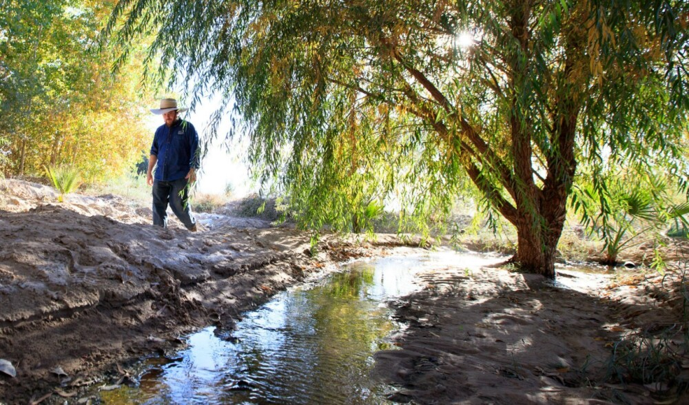
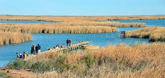
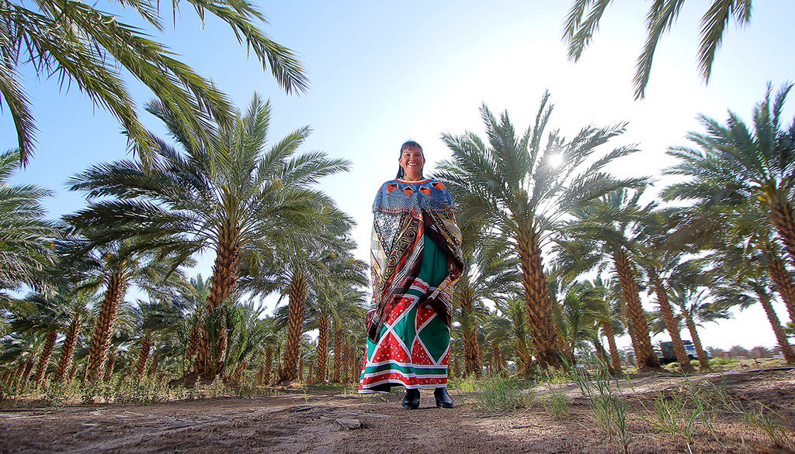

© Sonoran InstituteWhen to Visit
October through April is the ideal time to visit the Colorado River Delta. Desert winters are mild and clear, making hiking and paddling comfortable under vast open skies. Migratory waterbirds flood the remaining wetlands during these months, and the low winter light turns the cracked mudflats and salt flats into extraordinary landscapes of copper and gold.
Spring — particularly March and April — brings an added spectacle: on rare years when binational "pulse flows" are released, water courses through the dry channels and the delta briefly comes alive with birdsong, blooming cottonwoods, and the distant glint of water reaching toward the sea. Summers are extreme, with temperatures regularly exceeding 45°C.

© Pronatura NoroesteWildlife & the Fight for Restoration
Despite decades of water diversion, the Colorado Delta remains a critical stopover on the Pacific Flyway. The Ciénega de Santa Clara — the largest remaining wetland in the delta — shelters thousands of migratory waterbirds, including the endangered Yuma Ridgway's Rail and the southwestern willow flycatcher. Roseate spoonbills, great blue herons, and clouds of shorebirds wheel overhead during peak migration.
Binational agreements — Minute 319 and Minute 323 — have allowed conservation groups to release experimental "pulse flows," mimicking natural spring floods. At restoration sites like Laguna Grande, native cottonwood and willow forests have returned, and with them, species not seen here in a generation. It is a slow, determined reclaiming of a lost landscape.
 © NASA Earth Observatory
© NASA Earth Observatory
A River Running Dry
The Colorado River travels 2,330 kilometres from the Rocky Mountains to the Gulf of California — yet for most of the year, it never arrives. So much water is drawn off for agriculture and cities across seven US states and two Mexican states that the river regularly runs dry miles before it reaches the sea.
This is one of the most dramatic human alterations of a river system anywhere on Earth. What was once described by writer Aldo Leopold as a "milk and honey wilderness" — a vast, lush estuary — is now largely cracked mudflat and sand. Only the Rio Hardy maintains year-round flow, offering a narrow ribbon of the riparian beauty that once defined the entire delta.

© UABC / Binational Delta ArchiveThe Cucapá & a Binational Delta
For over a thousand years, the Cucapá people — whose name means "People of the River" — have lived alongside the Colorado, fishing its channels and cultivating its floodplains. The delta has been their physical and spiritual home across generations. Today, their fishing rights in the Upper Gulf of California are contested, and their traditional way of life increasingly fragile.
The delta also sits at the heart of a complex binational economy. The surrounding Mexicali Valley is one of Mexico's most productive agricultural regions — irrigated by the very water that was once meant for the delta's wetlands. Managing these competing demands across the US–Mexico border is one of the defining environmental negotiations of the 21st century.
Activities &
Adventures
Discover the many ways to experience the Colorado Delta, from paddling the Rio Hardy to birdwatching at the Ciénega de Santa Clara.

Delta Gallery
© NASA / USGS
© Sonoran Institute
© Pronatura Noroeste
© WWF / Omar Vidal
© Enrique Hambleton / CICESE